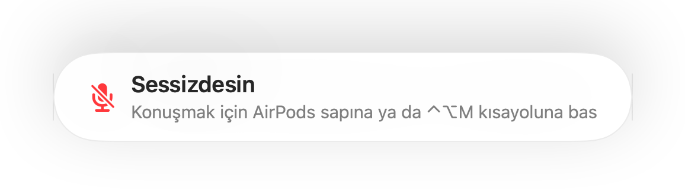

Her görüşme uygulaması için “Sessizdesin” hatırlatması
Zoom sessizdeyken konuştuğunda seni uyarır. Diğer çoğu uygulama bunu yapmaz, web üzerinden yapılan görüşmeler ise neredeyse hiç yapmaz. Bir dakika boyunca bir şeyler anlatırsın, sonra herkesin seni beklediğini fark edersin.
Muffle, sen sessizdeyken konuşup konuşmadığını takip eder ve her uygulamada bir hatırlatma gösterir. Görüşmede AirPods veya bir kulaklık kullanıldığında Mac'in kendi mikrofonunu dinler, üstelik sadece ses seviyesine bakar. Hiçbir şey kaydedilmez.
Muffle'ı 3 gün ücretsiz deneYakında Mac App Store'da
Hatırlatmayı aç
- Muffle'ı yükle ve mikrofon izni ver.
- Muffle Ayarları içinde “Sessizdeyken konuşursam hatırlat” seçeneğinin açık olduğundan emin ol.
- AirPods veya bir kulaklık ile görüşmeye katıl ve mikrofonu sustur.
- Konuşmaya başla. Ekranda “Sessizdesin” hatırlatması görünür.

- Bir önceki toplantıdan beri mikrofonun hâlâ sessizdeyken yeni bir görüşmeye mi katılıyorsun? Muffle görüşme başlar başlamaz sana hatırlatır.
- Klavyede yazı yazmak hatırlatmayı tetiklemez. Yalnızca düzenli konuşma tetikler.
Sorular
Hatırlatma Mac'in dahili mikrofonuyla çalışır mı?
Görüşmede AirPods veya bir kulaklık kullanıldığında çalışır. Görüşme Mac'in kendi mikrofonunu kullanıyorsa, o mikrofon susturulmuş olacağı için seni duyamaz.
Sesim kaydediliyor mu?
Hayır. Muffle yalnızca ses seviyesini ölçer; hiçbir sesi asla saklamaz veya göndermez.